Bản phác hệ thống nhân vật & trang bị · xin góp ý
Đề xuất hệ thống nhân vật mới · kiểu Lineage 2. Bỏ việc chọn kỹ năng/nội tại rối mắt. Thay bằng lên cấp 1→99 và 5 lần tiến hóa qua nhiệm vụ gom nguyên liệu. Mỗi lần tiến hóa, nhân vật đổi ngoại hình và học thêm kỹ năng. Ở Lv 40 chọn 1 trong 2 nhánh như L2. Kỹ năng học được thì tự dùng, còn build khác nhau là nhờ nhánh và trang bị.
Đây là gì?
Bản phác (mockup) hệ thống nhân vật và trang bị của SOULBOUND (tên tạm), game nhập vai pixel chibi đánh tự động. Chưa phải game thật, số liệu chỉ là minh họa.
Hình là ảnh chụp nên nút trong hình không bấm được. Mã như QĐ-04 hay M2a là ghi chú nội bộ, bạn bỏ qua được.
Trên điện thoại: chạm vào hình để mở cỡ lớn rồi phóng to, hoặc bấm Xem cỡ thật ở góc dưới rồi vuốt ngang từng hình.
Mình cần bạn góp ý
- Lộ trình (mục 1): lên cấp 1 → 99, tới mốc thì làm nhiệm vụ gom nguyên liệu để tiến hóa. Nghe có hấp dẫn không, hay dễ chán?
- Cây tiến hóa (mục 2): tên và ngoại hình từng dạng. Ở mỗi class, bạn sẽ chọn nhánh A hay B ở Lv 40, vì sao? Dạng nào nhìn chưa đẹp hoặc khó phân biệt?
- Màn tiến hóa (mục 3): nhìn vào có biết đang thiếu gì và phải làm gì tiếp không?
- Trang bị (mục 4): nhìn hình có đoán được hạng NG → S không? Hạng nào đẹp nhất, hạng nào nên vẽ lại? Màn Trang bị có rối không?
- Săn Boss Epic (mục 5): mỗi boss giữ 1 món trang sức mang tên nó; cần Đá Triệu Hồi mới đánh được, thắng mà không rơi món thì nhận 1 Ấn, gom 3 Ấn đổi chắc 1 món. Bạn có muốn săn không? Boss nào nhìn ngầu nhất, boss nào nên vẽ lại?
- Kế hoạch (mục 6): thứ tự các mốc có hợp lý không? Còn thiếu hay thừa gì?
Cách góp ý: trả lời ngay trong tin nhắn gửi link này, ghi số mục trước, ví dụ: “4a: hạng C với B nhìn hơi giống nhau”. Góp ý ngắn cũng rất quý!
1Lộ trình cấp 1 → 99 5 mốc khóa cấp · mỗi mốc là 1 nhiệm vụ tiến hóa
Mỗi khoảng cấp gắn với một vùng đất và một chương. Chạm mốc thì khóa cấp cho đến khi làm xong nhiệm vụ. Thời gian là ước lượng cộng dồn cho người chơi bình thường (auto-battle, có chơi lúc treo máy), sẽ chỉnh lại khi mô phỏng cân bằng.
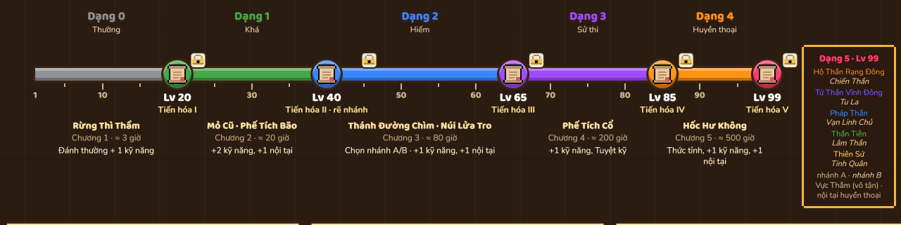
 1 · Chạm mốc
1 · Chạm mốc
- Tới Lv 20 / 40 / 65 / 85 / 99 thì khóa cấp.
- XP vẫn cộng vào Kho dự trữ, tối đa đủ 1 cấp, nên không phí thời gian farm.
- Giữa hai mốc, cứ 5 cấp thì một kỹ năng đã có +1 bậc (mạnh hơn, hồi nhanh hơn).
 2 · Nhiệm vụ
2 · Nhiệm vụ
- NPC hội class ở làng Lumen giao nhiệm vụ.
- Cần 2 nguyên liệu rơi trong vùng hiện tại, 1 vật phẩm nhiệm vụ chỉ rơi từ Elite khi đang nhận nhiệm vụ, và vàng.
- Lần V (Lv 99) là chuỗi nhiệm vụ dài, kết thúc bằng trận thử thách riêng.
 3 · Tiến hóa
3 · Tiến hóa
- Ngoại hình mới, kèm hoạt cảnh tiến hóa.
- Học thêm kỹ năng theo bảng của class, +15% chỉ số gốc.
- Mở khoảng cấp tiếp theo; XP trong Kho dự trữ được trả lại ngay.
- Dạng 4 (Lv 85) có Thức tỉnh: nâng cấp các kỹ năng cũ.
2 Cây tiến hóa 5 class · Dạng 0–1 chung, Lv 40 rẽ nhánh A/B
Màu nhãn “Dạng” dùng lại màu độ hiếm: Thường → Khá → Hiếm → Sử thi → Huyền thoại → Thần thoại. Mỗi thẻ ghi các kỹ năng mới học ở dạng đó. Mỗi nhánh đủ 12 kỹ năng: 5 dùng chung (Lv 1–20) và 7 riêng (Lv 40–99). Đường vàng từ mốc Lv 40 rẽ xuống nhánh B. Từ Dạng 3 có vòng rune dưới chân, từ Dạng 4 có hạt sáng, Dạng 5 thêm hào quang, màu theo nhánh.
3Màn Anh hùng · Tiến hóa 1280×720 · thay cho Phòng thử build · hình trên: trước, hình dưới: sau khi tiến hóa
Sát Thủ vừa chạm Lv 20. Còn thiếu 6 Nanh Sói và Ấn Bóng Tối, món chỉ rơi từ Tù Trưởng Goblin khi đang nhận nhiệm vụ. Đủ đồ thì nút TIẾN HÓA sáng lên. Bấm vào: nhân vật lóe sáng, đổi sang dáng mới, mở 3 kỹ năng mới, và XP trong Kho dự trữ chảy vào Lv 21.
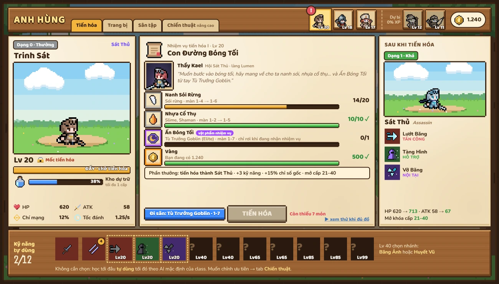
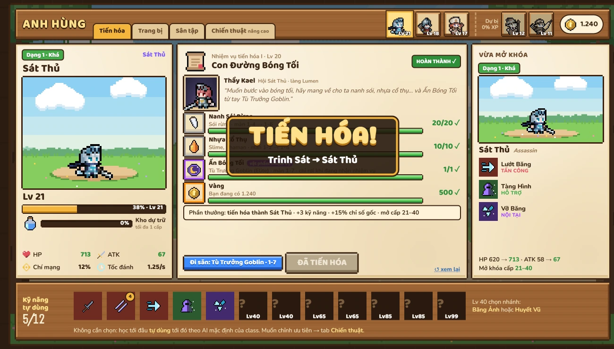
Thanh dưới cùng: 12 ô kỹ năng xếp theo cấp mở khóa. 5 ô đầu dùng chung, ô viền nét đứt sẽ mở ở lần tiến hóa tới, số vàng là bậc kỹ năng. 7 ô “?” còn lại hiện kỹ năng của nhánh chọn ở Lv 40. Ngoài nhánh, người chơi không cần chọn gì. Góc phải trên: 3 anh hùng ra trận và 2 dự bị (không nhận XP, đổi người ở màn Chọn đội hình). Tab Trang bị có 11 ô kiểu L2 (xem mục 4), tab Sân tập là hình nộm cũ, tab Chiến thuật là trình soạn luật AI, để dành cho ai thích chỉnh.
4Trang bị kiểu Lineage 2 hạng NG → S khóa theo tiến hóa · 2 loại vũ khí mỗi class · 11 ô · cường hóa +10
Bỏ affix ngẫu nhiên và độ hiếm. Mỗi món có hạng (NG, D, C, B, A, S) và iLv. Hạng mở dần theo tiến hóa, giống L2. Cùng tên thì cùng chỉ số, nên so đồ chỉ cần nhìn hạng, iLv và cấp cường hóa. Build khác nhau nhờ loại vũ khí, loại giáp (bộ 4 món) và Relic. Vũ khí đang cầm được vẽ lên người nhân vật.
aHạng đồ mở theo tiến hóa mỗi hạng gắn một vùng đất · mỗi hạng một dáng riêng, không chỉ đổi màu
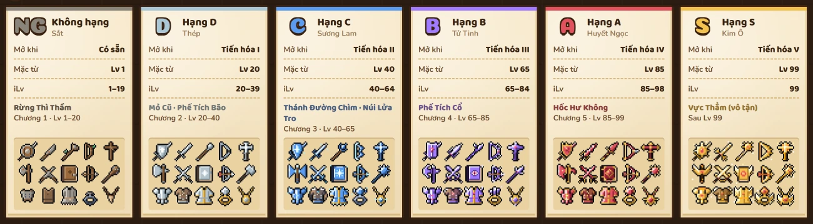
Ô icon: 2 hàng vũ khí (loại 1, loại 2; mỗi cột 1 class), rồi Giáp nặng, Giáp nhẹ, Áo vải, rồi Nhẫn, Bông tai, Vòng cổ. Hạng S chỉ rơi ở Vực Thẳm sau Lv 99. Mỗi hạng có ngôn ngữ hình riêng: NG gỗ, đá, da thô · D thép trơn · C băng: mũi nhọn, bông tuyết · B tinh thể mọc gai · A hồng ngọc, móc và vuốt vàng · S mặt trời và cánh Kim Ô.
bVũ khí vẽ trên người theo món đang cầm khung tĩnh phóng 3× · cùng vị trí chân · đổi cả hình theo hạng
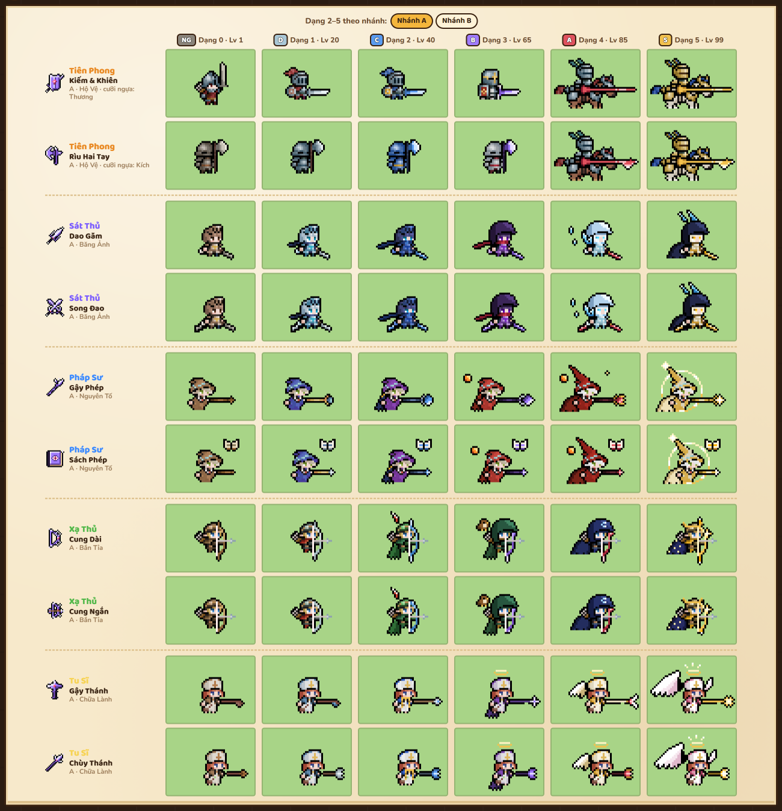
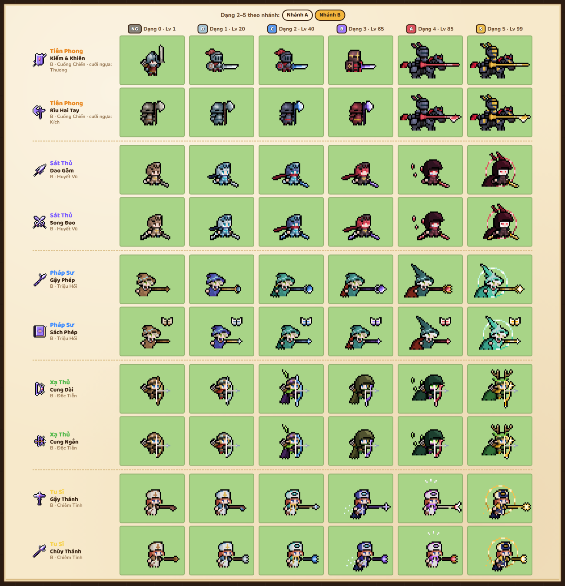
Mỗi cột là hạng mở ở dạng đó. Vũ khí trên người đổi cả hình theo hạng cho khớp icon ở mục a, không chỉ đổi màu: Dao Găm NG quấn da, gỉ → S lưỡi bản rộng mạ vàng; Kiếm NG ngắn, mẻ → C chắn cong móc → B ngọc hồng, gai tinh thể; Rìu NG nhỏ, gỉ → C lưỡi trăng khuyết băng → B tinh thể răng cưa; thương A có ngạnh móc, S có cánh vàng; kích S hai lưỡi trăng khuyết. Gậy, chùy, cung đổi đầu theo hạng như trước. Hai hình trên là nhánh A và nhánh B: Dạng 2–5 đổi dáng theo nhánh, vũ khí cùng loại, cùng hạng. Tiên Phong lên ngựa (Dạng 4–5) đổi sang thương hoặc kích. Hàng dưới: Bóng Ma (Dạng 3) cầm Dao Găm đủ 6 hạng. A và S còn khóa vì Dạng 3 mới mặc được tới hạng B.
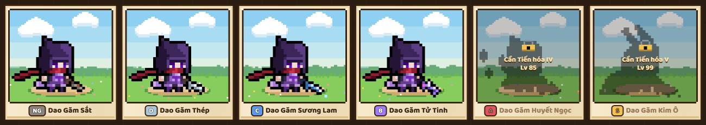
cLuật trang bị giáp, trang sức, relic, cường hóa, nguồn đồ
dMàn Trang bị 1280×720
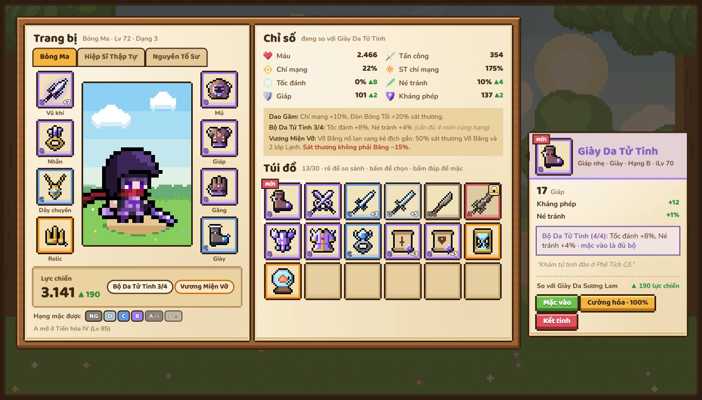
Bản phác gốc bấm thử được: rê chuột vào món trong túi để so chỉ số và lực chiến, bấm đúp để mặc. Có sẵn vài tình huống: mặc Giày Da Tử Tinh cho đủ bộ Da 4/4; Cường hóa Dao Găm +7 lên +8 (33%, thất bại thì về +3); Kết tinh Dao Găm Thép rồi đổi Tinh Thể lấy cuộn; Dao Găm Huyết Ngọc còn khóa tới Lv 85. Hàng dưới con rối là 5 ô trang sức: 2 món viền xanh ngọc là trang sức Epic (mục 5). Trong túi có Nhẫn Cổ Vương để thay 1 nhẫn thường, và 1 Nhẫn Dơi Chúa thứ hai: trùng tên nên không đeo được, chỉ kết tinh thành 1 Ấn. Số liệu là minh họa.
5Săn Boss Epic 8 boss kiểu L2 · Đá Triệu Hồi · 5 ô trang sức Epic
Giống boss Epic của L2 (Queen Ant, Core, Orfen, Zaken, Baium, Antharas, Valakas): mỗi boss giữ 1 món trang sức mang tên nó. Muốn đánh phải có Đá Triệu Hồi, rơi từ boss màn. Thắng thì 1/3 rơi món Epic, còn lại nhận 1 Ấn; gom 3 Ấn đổi chắc 1 món. Mọi luật dưới đây đều chốt (28/09/2026).
a8 boss Epic 3 nhẫn · 3 bông tai · 2 vòng cổ · Lv 40 → 99
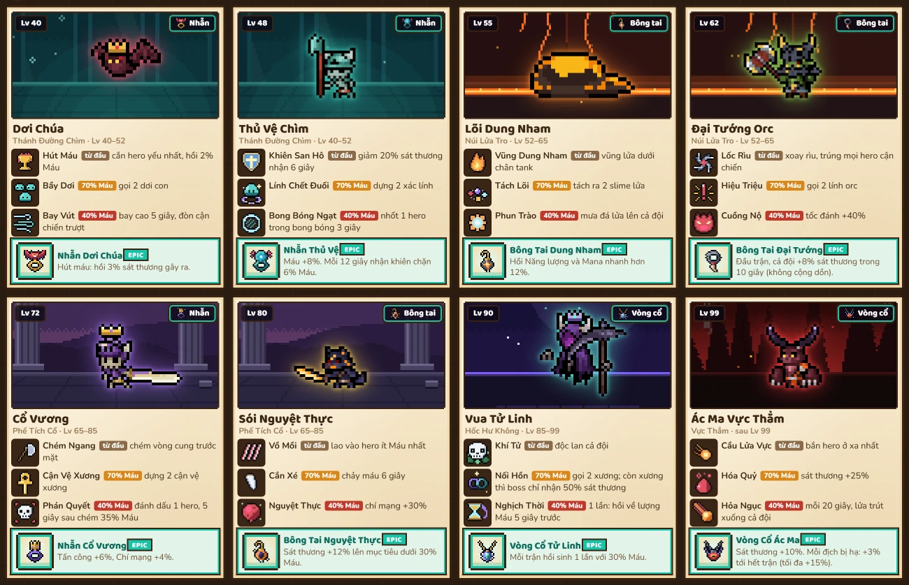
Boss là sprite Zerie phóng to, đổi màu, thêm phụ kiện và hào quang; hang boss vẽ bằng code theo 5 vùng: Thánh Đường Chìm, Núi Lửa Tro, Phế Tích Cổ, Hốc Hư Không, Vực Thẳm. Mỗi boss có 3 chiêu theo giai đoạn: từ đầu, khi còn 70% Máu, khi còn 40% Máu. Số liệu là minh họa.
bMàn Săn Boss 1280×720
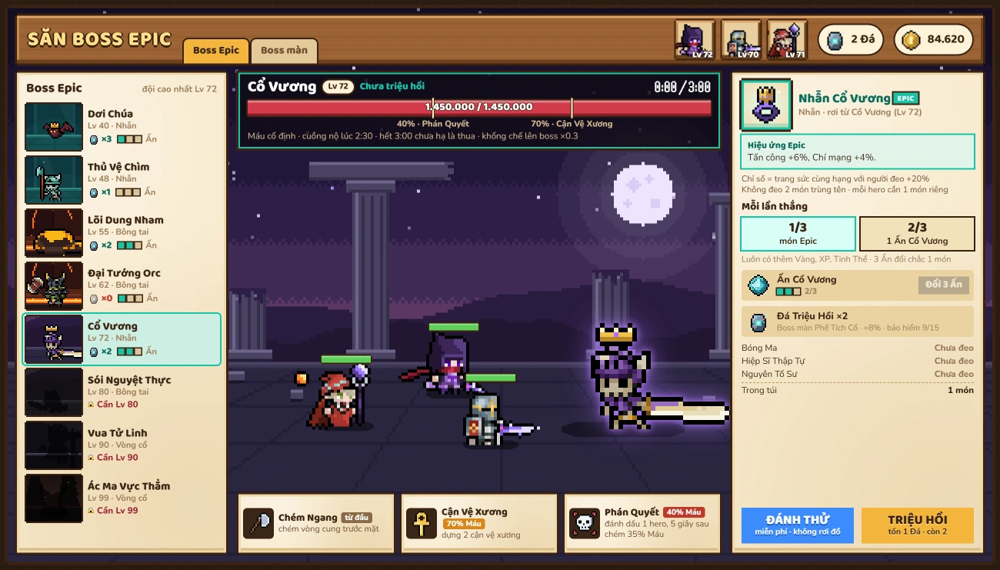
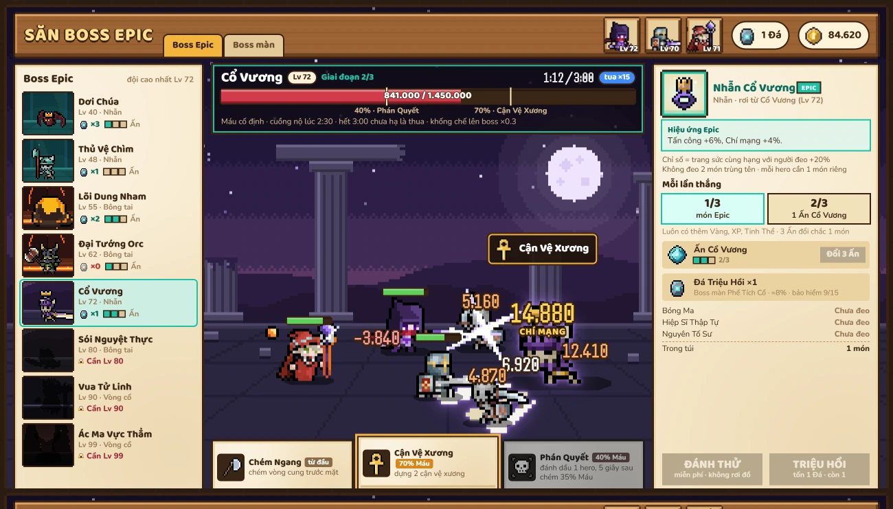
Hình trên: đã chọn Cổ Vương, chưa bấm TRIỆU HỒI. Hình dưới: đang đánh, boss còn 58% Máu nên đã sang giai đoạn 2 và gọi 2 cận vệ xương; còn 40% thì mở chiêu cuối. Thắng mà không rơi món thì nhận 1 Ấn; gom 3 Ấn đổi chắc 1 món. ĐÁNH THỬ là đánh boss bóng: miễn phí, không rơi đồ. Đại Tướng Orc đã hết Đá (phải farm boss màn); boss trên Lv 72 còn khóa.
cLuật Săn Boss vòng lặp · luật trận · món Epic · 8 boss theo ô
6Thay đổi so với hiện tại những gì giữ, đổi, thêm · kế hoạch mốc
GIỮGiữ nguyên
- Lõi combat M1–M1.6: Lạnh → Đóng băng → Giòn → Vỡ Băng, giảm dần khống chế, threat, nhật ký trận.
- 3 class cũ và cơ chế riêng: Thế Thủ của Tiên Phong, Dấu + Năng lượng của Sát Thủ, Mana + Tích Tụ của Pháp Sư (QĐ-106).
- iLv (QĐ-107), nay đi kèm hạng NG → S.
- Art Zerie, theme gỗ/giấy da, số bay.
- Preset AI trở thành AI mặc định của từng class.
ĐỔIThay đổi
Chọn 4/7 kỹ năng, 3/8 nội tại→ học theo cấp và tự dùng hết (thay QĐ-04, 85, 86).Cấp tối đa 20→ 99 (thay QĐ-75).- Phòng thử build → màn Anh hùng. Trình soạn luật AI chuyển thành tab nâng cao.
- Các nội tại đánh đổi (Pháo Thủy Tinh, Khế Ước Máu…) → Relic: 1 ô riêng, 1 hiệu ứng mạnh kèm 1 cái giá.
Trang bị 6 ô→ 11 ô kiểu L2: vũ khí, mũ, giáp, găng, giày, relic, 2 nhẫn, 2 bông tai, vòng cổ (thay QĐ-76).Affix ngẫu nhiên, set, legendary→ chỉ số cố định theo hạng + iLv, cường hóa, bộ giáp 4 món (thay QĐ-77, 84).- Hạng đồ khóa theo tiến hóa: D ở Lv 20, C ở 40, B ở 65, A ở 85, S ở 99 (cập nhật QĐ-107).
- Song Đao không còn là dạng tiến hóa của Sát Thủ mà là vũ khí loại 2, cầm được từ Lv 1.
- Chuyển sang nhánh B: Giáp Gai, Tử Chiến (Tiên Phong); Mưa Tên, Tên Độc, Tên Nổ (Xạ Thủ); Khiên Thánh, Linh Cảm (Tu Sĩ). Nhánh A nhận kỹ năng mới thay chỗ: Hào Quang Hộ Vệ, Ánh Sáng Hộ Thể; Ngắm Yếu Điểm, Viễn Xạ, Phá Giáp, Liên Xạ; Vòng Hồi Phục, Phép Màu.
Tên Sấmbỏ. - Đổi tên cho khỏi trùng với nhánh B: Sát Thủ Dạng 4A → Hàn Ảnh.
- Soát lại tên gọi: chữ “Kỵ” chỉ dùng cho dạng cưỡi ngựa; tên dạng là danh xưng người, leo bậc theo cấp, chữ Thần, Thánh, Thiên chỉ có từ Lv 85; không đặt tên theo món có thể không cầm (khiên, thương); bớt lặp Huyết, Máu. Ví dụ: Tư Tế → Tu Sĩ, Kỵ Sĩ Gai → Đấu Sĩ, Dệt Mệnh Sư → Quốc Sư. Thuật ngữ thống nhất tiếng Việt: Khiên (Guard) → Thế Thủ, Energy → Năng lượng, Chill → Lạnh.
MỚIThêm mới
- XP, cấp 1–99, Kho dự trữ khi khóa mốc.
- 5 nhiệm vụ tiến hóa mỗi class, có vật phẩm chỉ rơi khi đang nhận nhiệm vụ.
- Rẽ nhánh ở Lv 40: mỗi class 2 nhánh, mỗi nhánh 4 dạng (2–5), 7 kỹ năng, Thức tỉnh, màu hiệu ứng và hào quang riêng. Nhánh A: Hộ Vệ, Băng Ảnh, Nguyên Tố, Bắn Tỉa, Chữa Lành. Nhánh B: Cuồng Chiến, Huyết Vũ, Triệu Hồi, Độc Tiễn, Chiêm Tinh.
- 2 class mới theo GDD: Xạ Thủ (§14, Khí Thế) và Tu Sĩ (§16, Đức Tin, hồi máu cho đội).
- 6 dạng ngoại hình mỗi class: đổi màu + phụ kiện ghép theo từng khung hình.
- Sở hữu 5 anh hùng, mang 3 vào trận, chỉ người ra trận nhận XP (người vào sau từ Lv 1 được ×2 XP tới khi bằng cấp đội); Thức tỉnh ở Lv 85; nội tại huyền thoại ở Lv 99.
- Pháp Sư chọn nguyên tố chính ở Lv 20: Lửa, Băng hoặc Sét.
- 2 loại vũ khí mỗi class và 3 loại giáp (nặng, nhẹ, vải); đủ 4 món cùng loại, cùng hạng thì có thưởng bộ.
- Vũ khí đang cầm vẽ lên người nhân vật, mỗi hạng một hình riêng giống icon (không chỉ đổi màu), phát sáng ở +4 / +7 / +10.
- Cường hóa +1 → +10 bằng cuộn; Kết tinh đồ thừa thành Tinh Thể để đổi cuộn.
- Săn Boss Epic (mục 5): 8 boss, Đá Triệu Hồi, Ấn, 5 món trang sức Epic mang tên boss.
Kế hoạch mốc (đã chốt 28/09)
Câu hỏi còn mở
Nhịp chơi ≈ 2 / 10 / 35 / 80 / 150 giờ→ đã chốt kiểu L2: ≈ 3 / 20 / 80 / 200 / 500 giờ.- Đã chốt: có rẽ nhánh ở Lv 40 như L2, mỗi class chọn 1 trong 2 nhánh. Cả 10 nhánh của 5 class (mục 2) đã duyệt tên, kỹ năng, ngoại hình.
Có cho đổi nhánh sau này không?→ đã chốt: được đổi ở làng Lumen, tốn vàng; giữ cấp và đồ.- Đã chốt: hạng NG → S kiểu L2 khóa theo tiến hóa, giữ iLv (QĐ-107), 11 ô, cường hóa +10.
- Đã chốt Săn Boss Epic (mục 5): toàn bộ luật (cấp boss, tỉ lệ Đá, giai đoạn, cuồng nộ, chỉ số Epic +20%). Là mốc M4, sau M3.
Dự bị nhận 30% XP→ đã chốt: dự bị không nhận XP.- Đã chốt: đầu game có Tiên Phong, Sát Thủ, Pháp Sư; chiêu mộ Xạ Thủ và Tu Sĩ ở chương 1.
- Số liệu trang bị (chỉ số, tỉ lệ cường hóa, thưởng bộ) đang là minh họa, sẽ chỉnh theo mô phỏng cân bằng.
Cường hóa thất bại về +0→ đã chốt: về +3 (mốc an toàn), không mất đồ.